정보통신산업기사 (2007-09-02 기출문제)
1과목: 디지털전자회로
1. 다이오드를 사용하여 그림과 같은 회로를 구성하고 입력전압(Vi)을 -6[V]에서 6[V]까지 변화시킬 때 출력전압(Vo)의 변화는? (단, 다이오드의 Gutin 전압은 0.6[V]이다.)
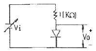
- 0.6[V] ~ 6[V]
- -6[V] ~ 6[V]
- -6[V] ~ 0[V]
- -6[V] ~ 0.6[V]
(정답률: 알수없음)

2. 그림과 같은 연산 증폭기에서 V1=0.1[V], V2=0.2[V], V3=0.3[V]일 때, 출력전압 VO[V]는?
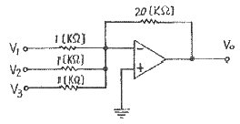
- -2
- -6
- -12
- -18
(정답률: 알수없음)
3. 이미터 접지일 때, 전류증폭율이 각각 hFE1, hFE2인 두 개의 트랜지스터 Q1과 Q2를 그림과 같이 접속하였을 때의 컬렉터 전류 IC는?
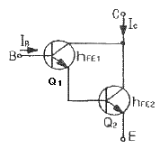
- IC=hFE1·hFE2·IB
- IC=hFE1/hFE2IB
- IC=hFE2(hFE1+1)IB
- IC=hFE1·IB+hFE2(hFE1+1)IB
(정답률: 알수없음)
4. 그림과 같은 논리회로의 출력 D는?
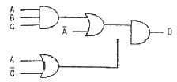
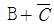
- ABC
- AB + BC
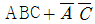
(정답률: 알수없음)
5. 전파정류기의 DC 출력전력[W]은 반파정류기 전력의 몇 배가 되는가?
- 2
- 4
- 8
- 16
(정답률: 알수없음)
6. 그림과 같은 회로가 수행할 수 있는 논리 동작은? (단, 부논리이며 A, B는 입력단자이다.)
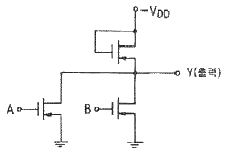
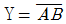
- Y = AB
- Y = A + B
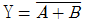
(정답률: 알수없음)
7. 다음 그림과 같이 NAND 게이트가 연결되어 있다. 이 회로와 등가인 게이트는?
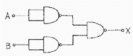
- OR 게이트
- AND 게이트
- NOR 게이트
- NAND 게이트
(정답률: 알수없음)
8. FM 방식에서 변조를 깊게 하여 초대 주파수 편이가 ⊿f 라고 했을 때 주파수 대역폭 B는?
- B = ⊿f
- B = 2⊿f
- B = 3⊿f
- B = 4⊿f
(정답률: 알수없음)
9. JK 플립플롭을 사용하여 D형 플립플롭을 만들려면 외부 결선은 어떻게 하는 것이 옳은가?
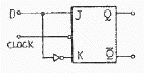
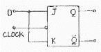
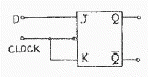
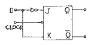
(정답률: 알수없음)
10. 다음 회로에서 저항 τE의 역할로 옳은 것은?
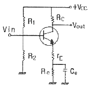
- 전압이득과 왜율을 모두 감소시킨다.
- 전압이득을 증가시킨다.
- 전압이득은 증가시키고 왜율은 감소시킨다.
- 전압이득은 감소시키고 왜율은 증가시킨다.
(정답률: 알수없음)
11. 다음은 수정편의 리액턴스 특성이다. 발진에 이용되는 주파수 범위는?
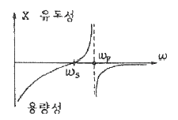
- ws ＜ w ＜ wp
- wp ＜ w
- ws ＞ w
- ws = w
(정답률: 알수없음)
12. 다음 콜피츠 발진회로의 발진주파수를 나타내는 식은?
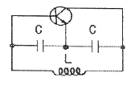
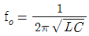
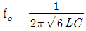
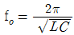
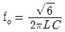
(정답률: 알수없음)
13. 그림과 같은 회로에서 기전력 E를 가하고 SW를 ON하였을 때 저항 양단의 전압 VR은 t초 후에 어떻게 되는가?
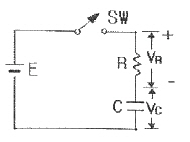
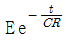
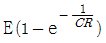
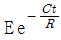
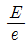
(정답률: 알수없음)
14. 1[kHz] 신호파로 710[kHz] 반송파를 진폭 변조했을 때 피변조파에 포함되지 않는 주파수 [kHz]는?
- 700
- 709
- 710
- 711
(정답률: 알수없음)
15. 트랜지스터를 증폭작용에 이용할 경우의 동작상태는?
- 포화 상태
- 활성 상태
- 차단 상태
- 역활성 상태
(정답률: 알수없음)
16. RC 결합 저주파 증폭회로에서 낮은 주파수의 이득이 감소되는 주된 원인은?
- 병렬 커패시턴스 때문에
- 이미터의 저항 때문에
- 컬렉터의 저항 때문에
- 결합 커패시턴스의 영향 때문에
(정답률: 알수없음)
17. 다음 중 DC 결합과 AC 결합이 함께 사용되는 발진기는?
- 비안정 멀티바이브레이터
- 단안정 멀티바이브레이터
- 쌍안정 멀티바이브레이터
- 블로킹 발진기
(정답률: 알수없음)
18. 두 입력을 비교하여 A ＞ B 이면 출력이 1이고, A ≤ B 이면, 출력이 0이 되는 논리회로를 설계하고자 한다. 이 조건을 만족하는 논리식은?
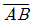
- AB
- A + B
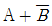
(정답률: 28%)
19. 다음 그림에서 합(s)에 대한 논리식이 옳은 것은?
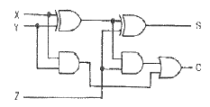
- (X + Y)⊕Z
- (X⊕Y)⊕Z
- XZ + Y
- XY⊕YZ
(정답률: 알수없음)
20. 다음 중 소비전력이 가장 적은 소자는?
- TTL
- ECL
- RTL
- CMOS
(정답률: 알수없음)
2과목: 정보통신기기
21. 다음 중 터미널의 기본적인 구성 중 출력장치에 속하는 것은?
- MICR
- OCR
- OMR
- CRT
(정답률: 알수없음)
22. 다음 중 수신기의 기본회로가 아닌 것은?
- 고주파 증폭부
- 중간주파 증폭부
- 복조부
- 완충 증폭부
(정답률: 알수없음)
23. 다음 중 5회선 이내의 국선이나 구내 교환기의 내선을 여러 대의 내선전화로 사용할 수 있는 다기능 전화기는?
- 키폰 전화기
- 내부 통화 전화기
- 푸시버튼 전화기
- Hot-line 전화장치
(정답률: 알수없음)
24. 주파수 분할 다중화(FDM)에서 다른 데이터 내역으로부터 신호의 간섭을 줄여주기 위한 완충 내역은 어느 것인가?
- 보호 대역
- 데이터 대역
- 유도 대역
- 감시 대역
(정답률: 알수없음)
25. FAX의 기본 과정에서 공간적으로 2차원으로 분포한 원화 정보를 1차원적인 신호로 변환하는 것을 송신주사라고 한다. 송신주사방식 중 기계적 주사방식이 아닌 것은?
- 원통 주사
- 원호면 주사
- 평면 주사
- 고체 주사
(정답률: 알수없음)
26. 다음 중 TV의 주사방식에 대한 설명으로 옳은 것은?
- 순차주사 : 주사선 전체를 우에서 좌로 주사시키는 방법
- 수직주사 : 주사선을 좌에서 우로 주사시키는 방법
- 비월주사 : 주사선을 한 개씩 건너뛰어 주사 후 다시 빠진 주사선을 주사하는 방법
- 수평주사 : 주사선을 위에서 아래쪽으로 주사시키는 방법
(정답률: 알수없음)
27. 전자교환기에서 사용되고 있는 호 처리 프로그램이 아닌 것은?
- 트래픽 측정 프로그램
- 입력처리 프로그램
- 출력처리 프로그램
- 서브루틴 프로그램
(정답률: 알수없음)
28. 데이터통신 시스템의 구성장치 중 통신제어장치의 기능에 대한 설명으로 옳지 않은 것은?
- 수신데이터의 처리 및 축적 기능
- 전송에러를 제어하는 기능
- 중앙처리장치와의 데이터 송ㆍ수신을 제어하는 기능
- 통신제어장치와 다수의 통신회선을 다중화 처리로 제어하는 기능
(정답률: 알수없음)
29. 주파수변조의 송ㆍ수신 회로에 대한 설명 중 옳은 것은?
- IDC : 음성 데이터의 진폭을 일정한 레벨로 증폭, 조절한다.
- DISCREMINATOR : 진폭신호에 따라 주파수 변화로 변환시킨다.
- PRE-EMIPHASIS : 음성데이터의 고역주파수를 강조시켜 변환한다.
- AFC : 자동적으로 수신이득을 일정한 레벨로 조절한다.
(정답률: 알수없음)
30. 다음 중 AM 송신기의 송신장치의 조건이 아닌 것은?
- 발사 주파수의 안정도가 높을 것
- 불요파일 스퓨리어스의 발사가 적을 것
- 일그러짐이나 왜곡 등의 잡음이 적을 것
- 점유 주파수 대역폭이 가능한 한 최대일 것
(정답률: 알수없음)
31. 포트 공동 이용기(port sharing unit)에 대한 설명 중 틀린 것은?
- 컴퓨터에 여러 개의 터미널들이 하나의 포트를 공유한다.
- 거리 제한이 있어 컴퓨터와 근거리에 있는 터미널들이 사용된다.
- 호스트 컴퓨터와 모뎀 사이에 설치된다.
- 컴퓨터 포트의 과부하를 조절하는 기능을 갖고 있다.
(정답률: 알수없음)
32. 다음 중 멀티미디어 관련 정보처리의 요구사항이 아닌 것은?
- 영상정보의 압축 기술 필요
- 영상정보의 실시간 전송을 위한 고속 통신망 구축
- 통합된 다중 처리를 위한 아날로그화 변환 기술의 확보
- 다량의 멀티미디어 정보 처리를 위한 대용량 저장장치가 필요
(정답률: 알수없음)
33. 다음 중 DSU(Digital Service Unit)의 특징이 아닌 것은?
- 디지털 전송로에서 사용한다.
- 단극성 신호를 양극성 신호로 변환한다.
- 비용이 모뎀보다 저렴하다.
- 왜곡 및 잡음 등을 보상해주는 등화기능이 있다.
(정답률: 알수없음)
34. 다음 중 전화극의 다중화기 채널에 가입자를 직접 수용할 수 있는 장비는?
- DSU(Digital Sharing Unit)
- CSU(Channel Service Unit)
- CPU(Central Processing Unit)
- CCU(Communication Control Unit)
(정답률: 알수없음)
35. 이동하고 있는 수신국의 전방에서 오는 전파의 주파수는 높아지고, 뒤에서 되돌아오는 전파의 주파수는 낮아져 송신지점에서 단일 주파수 일지라도 수신점에서는 여러 주파수가 도래하는 것으로 에러발생의 원인 중 하나인 것은?
- 페이딩 현상
- 도플러 현상
- 채널 간섭
- 맥놀이 현상
(정답률: 알수없음)
36. 모뎀(MODEM)이 갖추어야 할 조건이 아닌 것은?
- 호환성
- 회선 교환 기능
- 상호간 신뢰성
- 에러 검출 및 정정
(정답률: 알수없음)
37. 정보 단말기의 기능이 아닌 것은?
- 입ㆍ출력 기능
- 입ㆍ출력 제어기능
- 회선 제어 기능
- 송ㆍ수신 제어기능
(정답률: 알수없음)
38. TV 채널대역 내에서 영상신호 및 음성신호 대역으로 사용되지 않는 부분을 이용하는 방식은?
- 텔레텍스트
- 비디오텍스
- 정지화방송
- 텔레텍스
(정답률: 알수없음)
39. MHS(Message Handing System)의 구성요소로서 텔레텍스나 팩시밀리 등의 텔레매틱스 User가 이용하도록 하는 기능을 제공하는 것은?
- UA(User Agent)
- MTA(Message Transfer Agent)
- MS(Message Store)
- AU(Access Unit)
(정답률: 알수없음)
40. 화상을 전기신호로 변환하여 보내진 신호를 수신측에서 빛의 명암으로 변환하여 원 화상을 재현하는 기기는?
- TV
- 전화
- PDA
- FAX
(정답률: 알수없음)
3과목: 정보전송개론
41. PCM 통신방식에서 수신단에만 설치하는 회로는?
- 표본화 회로
- 양자화 회로
- 부보화 회로
- 복호화 회로
(정답률: 알수없음)
42. 한 개의 광섬유에 파장이 각기 다른 신호를 단일 빔으로 모아서 전송하는 광 다중 전송 방식은?
- WDM
- PPM
- PFM
- TDM
(정답률: 알수없음)
43. PCM 통신의 부호화 과정에서 널리 사용되고 있는 부호는?
- Gray 부호
- BCD 부호
- Biquinary 부호
- Hamming 부호
(정답률: 알수없음)
44. NRZ 코드방식에 대한 설명 중 옳지 않은 것은?
- RZ 코드방식보다 넓은 대역폭이 필요하다.
- RZ 코드방식보다 duty cycle이 길다.
- 직류성분이 존재하며, RZ 코드방식보다 동기화 능력이 떨어진다.
- 잡음에 대한 성능면에서 RZ 코드방식보다 우수하다.
(정답률: 알수없음)
45. 다음 중에서 동일한 신호대 잡음비에 대하여 비트 오류율(bit error rate)이 가장 적은 디지털 전송방식은?
- ASK
- FSK
- PSK
- DPSK
(정답률: 알수없음)
46. 직렬 전송과 비교하여 병렬 전송의 특징으로 옳은 것은?
- 전송 속도가 느리다.
- 단말 장치와의 인터페이스 구성이 복잡하다.
- 진송 매체의 비용이 높다.
- 병렬 신호를 직렬 신호로 변환해야 한다.
(정답률: 알수없음)
47. 기지국의 서비스 지역을 확대시키기 위한 방법이 아닌 것은?
- 송신 출력을 증가시킨다.
- 기지국 안테나 높이를 감소시킨다.
- 지형에 맞는 안테나를 사용한다.
- 고이득 또는 지향성 안테나를 사용한다.
(정답률: 알수없음)
48. 어떤 코드의 최소 해밍거리가 8일 때, 수신측에서 정정할 수 있는 오류의 개수는?
- 2
- 3
- 4
- 8
(정답률: 알수없음)
49. 아날로그 신호를 표본화했을 때 얻어지는 신호는?
- PPM
- PWM
- PCM
- PAM
(정답률: 알수없음)
50. 다음 중 스펙트럼 확산 통신의 원리를 이용하는 다중화 방식은 어느 것인가?
- 부호분할 다중화
- 시분할 다중화
- 공간분할 다중화
- 주파수분할 다중화
(정답률: 알수없음)
51. 전진 에러 수정 코드(Forward Error Correction)의 특징에 해당하지 않는 것은?
- 데이터의 오류를 검출하고 정정할 수 있다.
- 정보 비트열에 잉여 비트열을 부가한 부호를 사용한다.
- 역채널이 필요 없고 연속적인 데이터 전송이 가능하다.
- 에러정정 시간이 짧아 비트효율이 높다.
(정답률: 알수없음)
52. 다음 중 OSI 2계층 프로토콜에 해당하지 않는 것은?
- HDLC
- PPP
- SLIP
- SNMP
(정답률: 알수없음)
53. 양자화에 있어 계단 크기(step size)를 작게하면 양자화 잡음과 경사과부화 잡음은 각각 어떻게 되는가? (단, 양자화 폭은 일정하다고 가장)
- 양자화 잡음은 작아지고 경사과부하 잡음은 커진다.
- 양자화 잡음은 커지고 경사과부하 잡음은 작아진다.
- 양자화 잡음도 커지고 경사과부하 잡음도 커진다.
- 양자화 잡음도 작아지고 경사과부하 잡음도 작아진다.
(정답률: 알수없음)
54. 광케이블에서 사용되는 규격화 주파수에 대한 설명 중 바르지 못한 것은?
- V number라고도 한다.
- 광케이블에서 생기는 광신호의 위상변화를 의미한다.
- 2.4⑤보다 작아야한다.
- 광케이블이 단일모드 광케이블인지 다중모드 광케이블인지 구분하는데 이용한다.
(정답률: 알수없음)
55. 신호가 가지는 주파수가 200~5000Hz일 때 최소 표본화 주파수는 얼마인가?
- 400[Hz]
- 9600[Hz]
- 10000[Hz]
- 10400[Hz]
(정답률: 알수없음)
56. 꼬임 상선(twisted-pair cable)을 꼬인 모양으로 만드는 이유로 가장 적합한 것은?
- 케이블의 강도를 높이기 위하여
- 전송거리를 늘리기 위하여
- 디지털 전송방식을 사용하기 위하여
- 누화를 방지하기 위하여
(정답률: 알수없음)
57. HDLC 전송제어절차에서 프레임을 구성하는 각 필드의 명칭을 순서대로 올바르게 배치한 항은 어느 것인가?
- 주소필드 - 제어필드 - 정보필드 - 플래그필드 - 오류검사필드 - 플래그필드
- 플래그필드 - 주소필드 - 제어필드 - 정보필드 - 오류검사필드 - 플래그필드
- 플래그필드 - 제어필드 - 주소필드 - 정보필드 - 오류검사필드 - 플래그필드
- 오류검사필드 - 주소필드 - 플래그필드 - 정보필드 - 제어필드 - 플래그필드
(정답률: 46%)
58. 광섬유의 분산에 대한 설명으로 틀린 것은?
- 멀티모드 광섬유에서는 색분산이 문제가 되고 싱글모드 광섬유에서는 모드분산이 문제가 된다.
- 일반적인 광섬유에서 0 분산은 1310[mm] 파장대에서만 존재한다.
- 장거리 전송을 위해서는 분산이 0 일 때 최적이다.
- 분산은 광섬유에서 광 펄스를 입사하면 광섬유를 통과하면서 빛이 퍼지는 현상이다.
(정답률: 알수없음)
59. 데이터 전송에서 다수의 에러를 검출하고 정정할 수 있는 부호방식은 어느 것인가?
- ARQ
- CRC
- Reed-Solomon code
- parity check
(정답률: 알수없음)
60. 다음 중 통신로의 용량을 결정하는 것은?
- 대역폭과 BER
- 대역폭과 전송속도
- 전송속도와 신호대 잡음비
- 대역폭과 신호대 잡음비
(정답률: 알수없음)
4과목: 전자계산기일반 및 정보설비기준
61. 다음 중 자외선을 이용하여 내용을 지울 수 있는 ROM은?
- 마스크 ROM
- EEROM
- PROM
- EPROM
(정답률: 알수없음)
62. UNIX의 운영체제(OS)에 주로 사용된 언어는?
- 어셈블리 언어
- BASIC 언어
- C 언어
- LISP 언어
(정답률: 알수없음)
63. 컴퓨터가 프로그램을 수행하고 있는 동안 컴퓨터의 내부나 외부에서 응급상태가 발생하여 현재 수행중인 프로그램을 일시적으로 중지하고 응급상태를 처리하는 기법은?
- DMA
- Time sharing
- Subroutine
- Interrupt
(정답률: 알수없음)
64. 다음 중 현재 수행중인 명령어를 기억하는 레지스터는?
- MAR(Memory Address Register)
- IR(Instruction Register)
- PC(Program Counter)
- Accumulator
(정답률: 알수없음)
65. 마이크로컴퓨터의 직렬 입ㆍ출력 인터페이스가 아닌 것은?
- SIO
- USART
- USB
- PPI
(정답률: 알수없음)
66. 데이터 접근방법이 순차적으로 접근되는 기억장치로서 가장 적합하지 않은 것은?
- FIFO 메모리
- LIFO 메모리
- 자기 테이프
- HDD
(정답률: 알수없음)
67. 명령 사이클 중에서 일반적으로 프로그램 카운터(PC)값이 증가되는 사이클은?
- fetch cycle
- indirect cycle
- execute cycle
- direct cycle
(정답률: 알수없음)
68. 다음 중 이항 연산이 아닌 것은?
- OR
- AND
- Complement
- 산술 연산
(정답률: 알수없음)
69. 다음 16진수 73C.4E를 10진수로 변환한 것 중 가장 근사치는?
- 185.23
- 1852.3⑤
- 18523.⑤
- 123.25
(정답률: 알수없음)
70. 다음 주소 지정 방식(Addressing Mode) 중에서 프로그램 카운터에 명령어의 주소부분을 더해서 실제 주소를 구하는 방식은?
- 직접 번지 방식
- 즉시 번지 방식
- 상대 번지 방식
- 레지스터 번지 방식
(정답률: 알수없음)
71. 다음 중 우리나라 전기통신사업의 구분에 속하지 않는 것은?
- 기간통신사업
- 별정통신사업
- 부가통신사업
- 특정통신사업
(정답률: 알수없음)
72. 정보통신부장관이 전기통신기본계획 수립시 포함되지 않은 사항은?
- 전기통신의 질서유지에 관한 사항
- 전기통신기술 보호에 관한 사항
- 전기통신사업에 관한 사항
- 전기통신의 이용효율화에 관한 사항
(정답률: 알수없음)
73. 정보통신공사업자 이외의 자가 시공할 수 있는 공사는?
- 통신구 설비공사
- 방송관리시스템 설비공사
- 지능망 설비공사
- 아마추어국의 무선설비 설치공사
(정답률: 알수없음)
74. 정보통신공사의 종류에서 정보설비공사에 해당되지 않는 것은?
- 철도통신신호 설비공사
- 방송전송선로 설비공사
- 정보매체 설비공사
- 항공ㆍ항만통신 설비공사
(정답률: 0%)
75. 정보통신부장관이 관계중앙행정기관별 부문계획을 종합하여 수립하는 정보화촉진기본계획에 포함되는 사항이 아닌 것은?
- 정보화 촉진 등과 관련된 국제협력에 관한 사항
- 정보통신기반의 고도화에 관한 사항
- 정보화 촉진 등에 대한 시책의 기본 방향
- 전기통신설비의 통합추진에 관한 사항
(정답률: 알수없음)
76. 실시간으로 동영상정보를 주고받을 수 있는 고속ㆍ대용량의 정보통신망은?
- 초고속정보통신망
- 종합디지털정보통신망
- 광대역종합정보통신망
- 실시간 고속인터넷통신망
(정답률: 알수없음)
77. 전기통신의 표준화에 관한 업무를 효율적으로 추진하기 위하여 설립한 기관은?
- 한국정보사회진흥원
- 전파연구소
- 한국정보보호진흥원
- 한국정보통신기술협회
(정답률: 알수없음)
78. 다음 중 전기통신사업자의 보편적 역무의 구체적 내용을 정할 때 고려할 사항이 아닌 것은?
- 정보화 촉진
- 전기통신역무의 보급 정도
- 공공의 이익과 안전
- 전기통신역무의 개발 정도
(정답률: 알수없음)
79. 기간통신사업자로부터 전기통신설비를 임차하여 기간 통신 역무 외에 전기통신역무를 제공하는 사업은?
- 부가통신사업
- 설비임차사업
- 별정통신사업
- 특정통신사업
(정답률: 알수없음)
80. 컴퓨터 등 정보처리능력을 가진 장치에 의하여 전자적인 형태로 작성되어 송ㆍ수신 또는 저장된 문서형식의 자료로서 표준화된 것을 무엇이라 하는가?
- 개인정보
- 전문
- 전자결재
- 전자문서
(정답률: 알수없음)